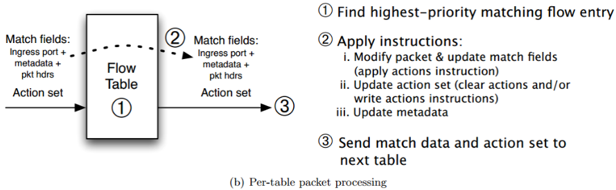

The Design and Implementation of
Open vSwitch
1. Introduction
SDN
Open vSwitch
openflow & flowtable
1.1 SDN
- Software-defined network
- Decoupling the control plane and the data plane
- The control plane makes decisions about where traffic is sent
1.2 Open vSwitch
“Open vSwitch is a production quality, multilayer virtual switch licensed under the open source Apache 2.0 license. ”
It is designed to enable massive network automation through programmatic extension, while still supporting standard management interfaces and protocols
1.2 Open vSwitch
- Advantages compared to traditional switches
- Configuration flexibility
- Low cost
1.2 Open vSwitch
- Where is Open vSwitch Used?
- Broad support:
- Linux, FreeBSD, NetBSD, Windows, ESX
- KVM, Xen, Docker, VirtualBox, Hyper-V, …
- OpenStack, CloudStack, OpenNebula, …
- Widely used:
- Most popular OpenStack networking backend
- Default network stack in XenServer
- 1,620 hits in Google Scholar
- Thousands of subscribers to OVS mailing lists
1.3 OpenFlow
- A communications protocol giving access to the forwarding plane
- Control the behavior of switches dynamically and programmatically
- Key protocol in many SDN solutions
A flow entry is uniquely identified by match fields and priority
1.3 Pipeline Processing
2. Open vSwitch Design
2.1 Ovs architecture
2.2 Packet classification
- Algorithmic packet classification is expensive on general purpose processors
- The generality of the form of the match
- Tuple space search
Tuple Space Search

用[x，y，z]中的x、y、z分别表示F1、 F2、F3的前缀长度。
规则可分为三类R1、R3、R6∈[1,2,3]，R5、R8、R9∈[0,4,0]，R2、R4、R7、R10∈[2,1,3]。
2.3 OVS Cache v1: Microflow Cache
Microflow:
- Implements the kernel module as a simple hash table.
- Complete set of packet headers and metadata
- Shaded data below:
Naive Approach to Populating Cache
“Crossproduct Problem”
Microflow Caching in Practice
- Crossproduct Problem
- Fine-grained cache entries, even a change in TTL would result in a miss
- To reduce flow set up time
Lazy Approach to Populating Cache
Solution: Build cache of combined “megaflows” lazily as packets arrive.
Same (or better!) table lookups as naive approach. Traffic locality yields practical cache size.
2.4 OVS Cache v2: Megaflow Cache
- Tuple space search
- Each tuple has a hash table
Stage
Divides fields into four groups:
| meta | meta + L1 | meta + L1 + L2 | meta + L1 + L2 + L3 |
If any search turns up no match, then the overall search also fails.
Prefix Tracking
Match the longest subnet prefix
e.g. IP address: src+dst. Use octet prefixes /8, /16, /24, /32
2.5 Cache Hierarchy
THE END
Speaker View
There's a speaker view. It includes a timer, preview of the upcoming slide as well as your speaker notes.
Press the S key to try it out.